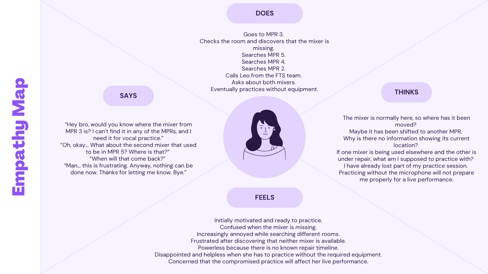
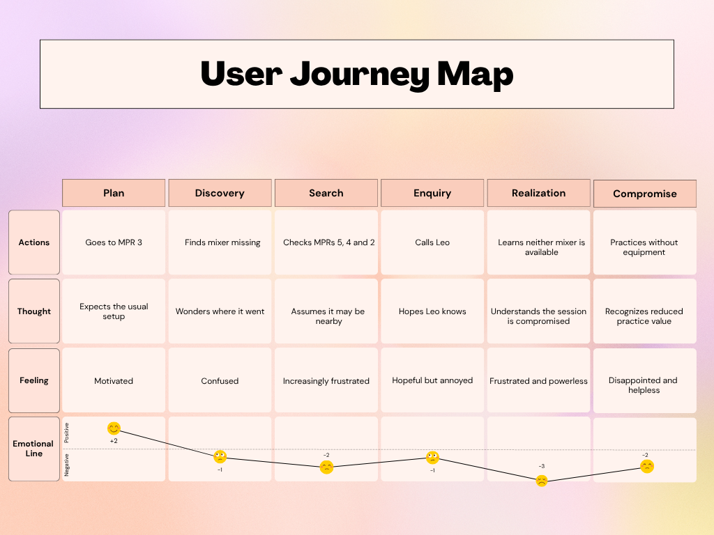
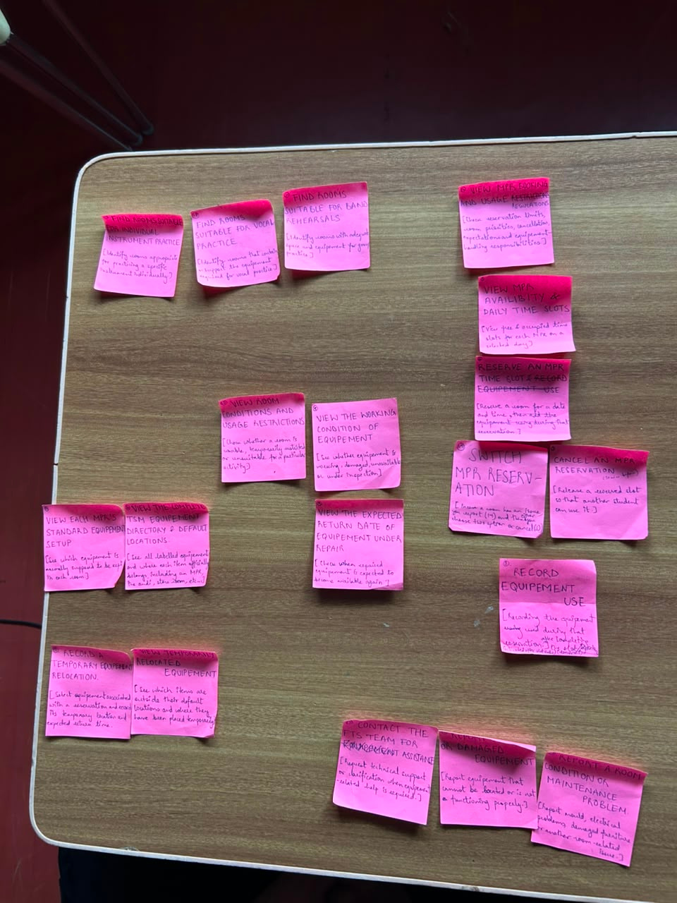
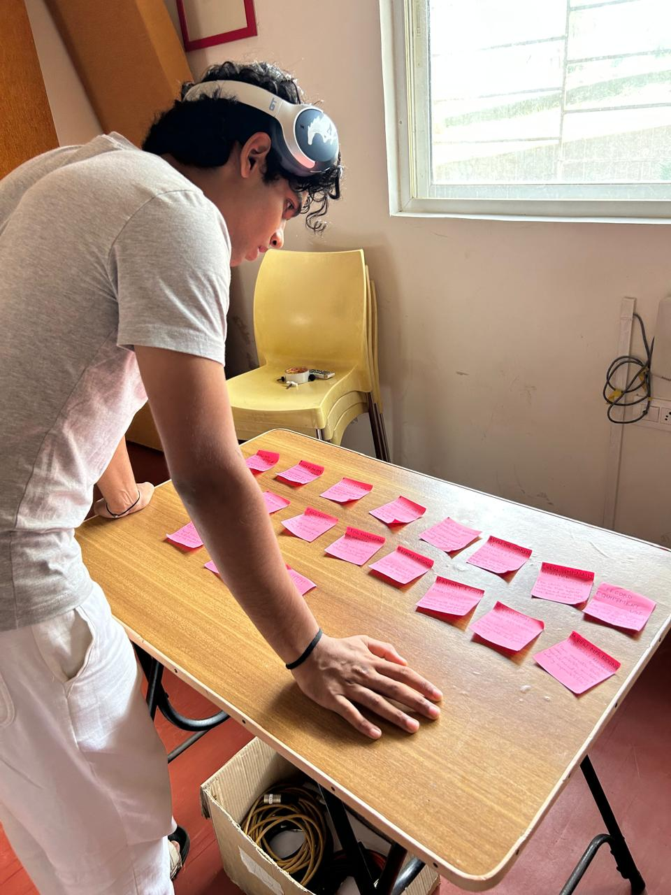
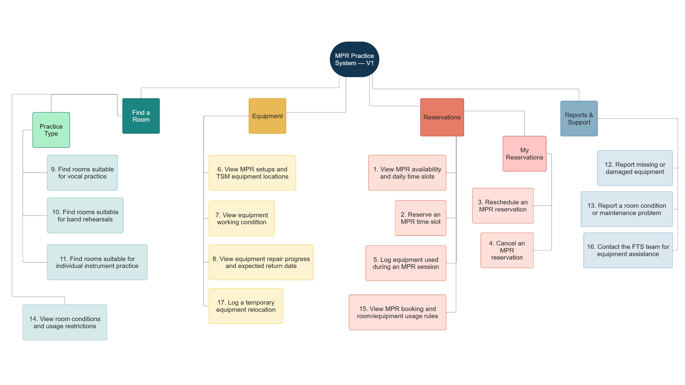
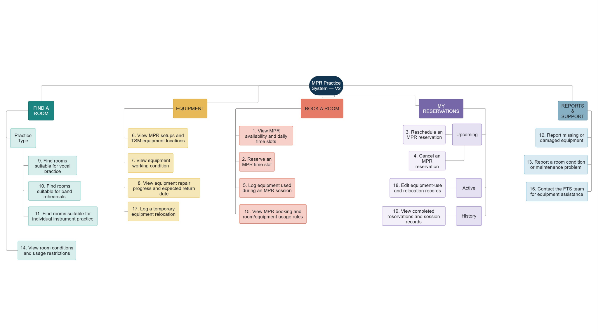

HCI Mid-Term · Empathy to Execution
Practice
ready.
A research-led product blueprint that helps True School of Music students find and reserve a suitable practice room, then confirm that the equipment they need is in place and working before practice begins.
00
Project overview
Research before screens.
How might we?
How might we help a frequent TSM vocalist reliably find and secure an appropriately equipped MPR for individual and group practice, particularly during high-demand periods?
Phase 1
Empathy & Definition
01
Initial assumption
We initially assumed the booking process was the main barrier.
Starting hypothesis
Students may struggle to find and use a suitable MPR because the existing process may not provide reliable information about room availability, room conditions and equipment.
- The former Excel sheet may not reflect actual room usage.
- A vacant MPR may not contain the equipment required for practice.
- The location and working condition of equipment may influence room choice.
- Students may need to physically check multiple rooms or contact others for information.
02
Proto-persona · before research
The frequent MPR user.
Assumption-based profile
Music student
Practises individually and with groups, particularly around assessments and performances.
May need more than an empty room: the room must also support the planned practice.
Assumed goals
- Find an available MPR.
- Use equipment suited to the planned activity.
- Avoid losing limited practice time.
Assumed behaviours
- Checks the booking sheet.
- Visits rooms to confirm availability.
- Contacts other students when information is unclear.
Assumed frustrations
- Booking information may be inaccurate.
- An available room may still be unsuitable.
- Preferred equipment may be missing or unusable.
This proto-persona records pre-research assumptions. It is not presented as validated user evidence.
03
Primary research
Three perspectives revealed shared patterns.
Three semi-structured interviews were conducted with frequent MPR users representing vocal, instrumental and technical perspectives.
P1 · Vocalist & frequent MPR user
Elizabeth John
Third-year vocalist who frequently uses MPRs for individual vocal practice and group rehearsals.
Physical room checks · compromised practice
P2 · Drummer, sound engineer & FTS member
Aniket Sao
Drummer and sound engineer who uses MPRs individually and with bands while supporting technical operations.
Outdated equipment records · informal coordination
P3 · Guitarist, sound engineer & FTS member
Leo Emprayil
Guitarist and live/studio sound engineer who frequently uses MPRs and helps manage equipment.
Equipment relocation · maintenance and accountability
01
Physical room checking is the default method.
02
Room availability does not guarantee suitability.
03
Informal coordination fills information gaps.
04
Equipment relocation lacks accessible tracking.
04
Assumptions to evidence
Research widened the problem beyond booking.
| Initial assumption | Result | Research evidence |
|---|---|---|
| The Excel sheet is the current booking system. | Changed | It existed previously but is no longer actively maintained. |
| Students physically check rooms. | Strongly supported | All three interview participants described physical checks. |
| Availability does not show suitability. | Strongly supported | Room condition and equipment determine actual usability. |
| Equipment moves between spaces. | Strongly supported | All three participants described equipment relocation. |
| Repair information may be unclear. | Strongly supported | Status and expected return dates are not dependable. |
Validated problem statement
TSM music students struggle to identify a suitable, properly equipped MPR because room availability, equipment location, working condition and maintenance status are not documented in one reliable and accessible place.
05
Research-based persona
Elizabeth needs reliable information before practice begins.
Primary user
Elizabeth John
Third-year vocalist · frequent individual vocal practice and group rehearsals
“An empty room is not enough if the equipment I need is missing or unusable.”
Goals
- Find a room suitable for her planned practice.
- Know where the required equipment is located and whether it is working.
- Use limited practice time effectively.
Behaviours
- Physically checks multiple rooms and their equipment.
- Relies on memory and informal coordination with other students.
- Continues practising without amplification when suitable equipment is unavailable.
Frustrations
- Equipment is moved without accessible updates.
- Repair progress and return dates are unclear.
- Searching for rooms and equipment consumes practice time.
- Missing equipment forces her to compromise vocal preparation.
06
Practice environment
Five rooms, but not five equivalent choices.
| Room | Reported condition and equipment | Typical use |
|---|---|---|
| MPR 1 | Affected by mould and generally considered unusable. | Not used |
| MPR 2 | One keyboard and Hindustani music instruments, including tanpura and harmonium. | Vocal and other individual practice |
| MPR 3 | Keyboard, mixer, monitors, cables, microphone, stand, drum set, guitars and bass guitars. | Band rehearsals and equipment-dependent individual practice |
| MPR 4 | Multiple keyboards. | Primarily piano practice |
| MPR 5 | Keyboard, poorly functioning drum set, guitars and bass guitars; former mixer and monitors no longer present. | Limited individual or group practice |
07
Specific scenario
The missing mixer.
Elizabeth went to MPR 3 to practice vocals with a microphone setup for live-performance preparation. The mixer normally kept there was missing. She searched MPRs 5, 4 and 2, then called Leo from the FTS team. Leo explained that one mixer had been moved to an MBA classroom and the second was under repair with no known return date. After losing approximately 10–15 minutes, Elizabeth practiced without the equipment she needed.
The log below is reconstructed from Elizabeth’s interview account. It records observable actions and reported speech/events only.
| Step | Observable action or reported event |
|---|---|
| 1 | Elizabeth goes to MPR 3. |
| 2 | She finds that the mixer normally kept in MPR 3 is absent. |
| 3 | She checks MPR 5, then MPR 4, then MPR 2. |
| 4 | After failing to locate the mixer, she takes out her phone and calls Leo, an FTS member. |
| 5 | Elizabeth says, “Hey bro, would you know where the mixer from MPR 3 is? I can’t find it in any of the MPRs, and I need it for vocal practice.” |
| 6 | Leo replies, “It’s been moved to Arts Block A for an MBA lecture.” |
| 7 | Elizabeth says, “Oh, okay… What about the second mixer that used to be in MPR 5? Where is that?” |
| 8 | Leo replies, “It’s gone for repairing.” |
| 9 | Elizabeth asks, “When will that come back?” |
| 10 | Leo replies, “I don’t know, but hopefully before the term ends,” and laughs. |
| 11 | Elizabeth says, “Man… this is frustrating. Anyway, nothing can be done now. Thanks for letting me know. Bye.” |
| 12 | She ends the call. |
| 13 | She begins practicing without the microphone setup. |
| 14 | Approximately 10–15 minutes have passed since she began searching for the mixer. |
08
Sensemaking
What Elizabeth says, thinks, does and feels.

09
Journey map
Elizabeth’s journey from planned practice to forced compromise.

10
Define
The pain is uncertainty, not simply an absent mixer.
Validated pain point
Elizabeth lacks reliable, up-to-date visibility into the location and availability of essential vocal equipment before beginning practice. This uncertainty frustrates her, wastes her limited practice time and forces her to compromise her preparation for live performance.
User Stories
Desired outcomes derived from the core pain point.
As a vocalist preparing for live performance, I want to know whether the equipment required for my practice is available before I begin, so that I can use my limited practice time effectively.
As a frequent MPR user, I want to know which room can support my planned practice activity, so that I do not have to physically search several rooms.
As a vocalist, I want to know when essential equipment has been moved, is unavailable or is under repair, so that I can adjust my practice plan before reaching the MPR.
Phase 2
Ideate & Evaluate
11
Initial feature inventory
Seventeen feature cards derived from three user stories.
The three user stories were translated into 17 feature and content cards. These cards were used in an open hierarchical card sort with ten frequent MPR users.
- View MPR availability and daily time slots
View free and occupied slots for each MPR on a selected day. - Reserve an MPR time slot
Reserve an available room for a selected date and time. - Reschedule an MPR reservation
Move an existing reservation to another available room or time slot. - Cancel an MPR reservation
Release a reserved slot so another student can use it. - Log equipment used during an MPR session
Select equipment used from the reserved MPR’s available default setup. - View MPR setups and TSM equipment locations
See each item’s default and current location across MPRs and other TSM facilities. - View equipment working condition
See whether each item is fully functional, partially functional, damaged or out of service. - View equipment repair progress and expected return date
See the maintenance stage and expected return date for equipment under repair. - Find rooms suitable for vocal practice
Identify rooms that support the equipment required for vocal practice. - Find rooms suitable for band rehearsals
Identify rooms with sufficient space and equipment for group practice. - Find rooms suitable for individual instrument practice
Identify rooms appropriate for practising a particular instrument individually. - Report missing or damaged equipment
Report equipment that cannot be located or is not functioning properly. - Report a room condition or maintenance problem
Report mould, electrical problems, damaged furniture or another room concern. - View room conditions and usage restrictions
Check whether a room is usable, restricted or unsuitable for an activity. - View MPR booking and room/equipment usage rules
Check booking limits, priorities, cancellation expectations and handling responsibilities. - Contact the FTS team for equipment assistance
Request technical help or equipment-related clarification. - Log a temporary equipment relocation
Record an item’s temporary location, expected return time or return to its default place.
12
Open hierarchical card sort
Ten participants revealed four recurring grouping patterns.
Participants grouped the 17 cards, named their categories and described alternative choices, expected sequences, mandatory steps and conditional actions.


9 OR 10 OR 11Participants treated the three practice types as alternative choices.
7 → 8Participants expected repair progress to follow working-condition information when an item was under repair.
2 → 3 OR 4Participants expected rescheduling and cancellation only after an initial reservation.
2 / ACTIVE SESSION → 5Participants associated equipment-use logging with a reservation or active session.
These arrows represent contextual and sequential relationships described by participants; they are not top-level menu nesting. Contacting FTS varied in placement and was sometimes treated as separate support rather than issue reporting.
13
Information Architecture
V1 Information Architecture derived from the card sort.
The repeated card-sort patterns were translated into four top-level branches: Find a Room, Equipment, Reservations, and Reports & Support. Each of the 17 tested cards was placed once in the hierarchy, while sequential relationships were documented separately rather than represented as menu nesting.

14
Tree testing
Tree testing revealed two problems in V1.
The V1 IA was first tested with two participants using five task scenarios. After revising the hierarchy and clarifying an ambiguous task, the V2 IA was tested with five additional participants using seven scenarios.
V1 pilot · 2 participants
Two navigation problems surfaced.
- Both participants hesitated when locating the option to reschedule an existing reservation.
- Both initially entered Reports & Support when asked to locate a “missing” mixer.
- The behaviour showed that reservation management needed greater visibility and that “missing” made the location task ambiguous.
V2 revisions
The structure and test wording were revised.
- My Reservations became a separate top-level branch.
- Feature 18, Edit equipment-use and relocation records, was added under Active.
- Feature 19, View completed reservations and session records, was added under History.
- The mixer task was rewritten to specify temporary relocation.
V2 validation · 5 participants
35/35 direct task successes.
- Each participant completed all seven tasks correctly.
- No hesitation, backtracking or incorrect first selection was observed.
- All participants correctly located the temporarily relocated mixer.
- V2 was retained as the final IA.
| V2 validation task | Expected path |
|---|---|
| Check which MPRs are free tomorrow from 6:00–7:00 PM. | Book a Room → Availability & Daily Slots |
| Find a room suitable for a band rehearsal. | Find a Room → Practice Type → Band Rehearsal |
| Check the current location of a temporarily relocated mixer. | Equipment → MPR Setups & TSM Equipment Locations |
| Reschedule an existing reservation. | My Reservations → Upcoming → Reschedule |
| Report a damaged microphone. | Reports & Support → Missing or Damaged Equipment |
| Edit equipment records for an active session. | My Reservations → Active → Edit Equipment Records |
| Review equipment records from a completed session. | My Reservations → History → Completed Reservations & Session Records |
Final feature inventory
The two evidence-based additions expanded the inventory from 17 tested card-sort items to 19 final features.
15
Final structure
Final V2 Information Architecture refined after validation.
V2 contains five top-level branches and 19 features. The revised hierarchy achieved 35 direct successes across 35 task attempts during the five-participant validation round. Following instructor feedback, the validated “Reservations” label was refined to “Book a Room” to distinguish creating a booking from managing one under “My Reservations”; the hierarchy itself was unchanged.

Phase 3
MVP Prioritization
16
MoSCoW
Only four features make the MVP.
All 19 features were categorized according to their importance to the validated pain point, their dependencies and the limits of the first release. Only four features were permitted in the Minimum Viable Product.
Must-Have 4
- 1. View MPR availability and daily time slots
- 2. Reserve an MPR time slot
- 6. View MPR setups and TSM equipment locations
- 7. View equipment working condition
Should-Have 9
- 17. Log a temporary equipment relocation
- 8. View equipment repair progress and expected return date
- 9. Find rooms suitable for vocal practice
- 14. View room conditions and usage restrictions
- 3. Reschedule an MPR reservation
- 4. Cancel an MPR reservation
- 10. Find rooms suitable for band rehearsals
- 11. Find rooms suitable for individual instrument practice
- 15. View MPR booking and room/equipment usage rules
Could-Have 4
- 5. Log equipment used during an MPR session
- 12. Report missing or damaged equipment
- 13. Report a room condition or maintenance problem
- 16. Contact the FTS team for equipment assistance
Won’t-Have in this MVP 2
- 18. Edit equipment-use and relocation records
- 19. View completed reservations and session records
Items are ordered from highest to lowest relative importance within each MoSCoW category. Feature 17 appears first among the Should-Haves because it narrowly lost the fourth and final Must-Have position to Feature 7 in the DFV comparison below.
17
DFV matrix
DFV resolved the fourth Must-Have.
Features 7 and 17 were equally desirable because both directly responded to the missing-mixer scenario. They were scored from 1–5 across Desirability, Feasibility and Viability, with each criterion weighted equally.
Scoring scale: 1 = very low, 2 = low, 3 = moderate, 4 = high, 5 = very high.
| Candidate | Desirability | Feasibility | Viability | Total |
|---|---|---|---|---|
| 7. View equipment working condition | 5 | 4 | 4 | 13/15 |
| 17. Log a temporary equipment relocation | 5 | 3 | 3 | 11/15 |
| Criterion | Feature 7: Working condition | Feature 17: Temporary relocation |
|---|---|---|
| Desirability | 5 — Directly helps students avoid selecting rooms containing unusable equipment. | 5 — Directly addresses uncertainty caused when equipment is moved. |
| Feasibility | 4 — Requires a status field and periodic updates by authorized users, but does not depend on every student recording an action. | 3 — Requires labelled equipment and consistent logging whenever an item is moved or returned. |
| Viability | 4 — Supports better use of existing equipment with a manageable maintenance process. | 3 — Accuracy depends on continued student and FTS compliance, creating greater operational effort. |
DFV winner
Feature 7: View equipment working condition wins the fourth Must-Have position with 13/15. Both candidates scored equally in Desirability, but Feature 7 achieved higher Feasibility because it does not depend on every equipment movement being logged, and higher Viability because it requires less ongoing coordination to remain reliable.
Final MVP
MPR availability.
Time-slot reservation.
Equipment location.
Equipment working condition.
Together, these four features address Elizabeth’s need to find a suitable practice room and determine whether the required equipment can be used, without expanding the first release to all 19 features.
Back to top ↑